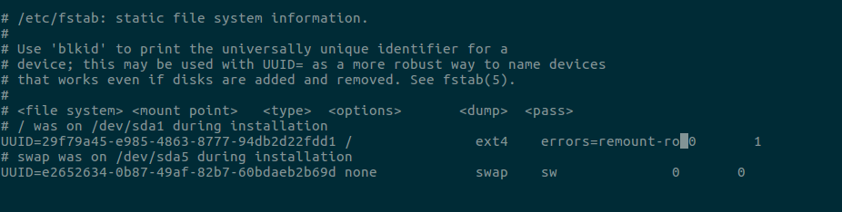
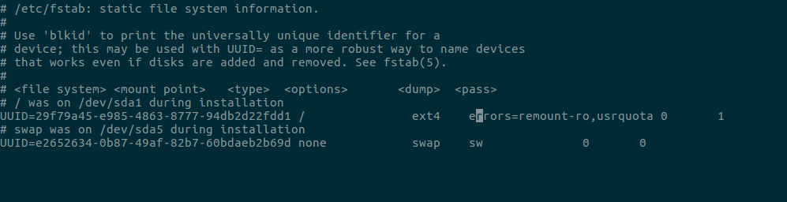
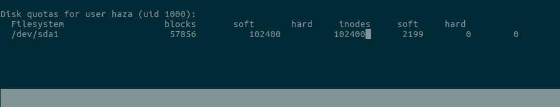

Pengertian Quota :
Quota adalah suatu perangkat administrasi sistem yang berfungsi untuk membatasi dan memantau pemakaian suatu partisi oleh user atau pun group.
Disk quota bisa diterapkan berdasarkan ruang disk (block quota) atau berdasarkan jumlah file (inode quota).
Disk quota bisa diterpakan per user atau per group.
jika diterapkan per user maka quota yang diterapkan mutlak milik user tersebut, misal : user holmes memiliki disk quota 5 MB, maka total 5MB tersebut adalah mutlak milik user holmes.
jika disk quota diterapkan per group maka kapasitas yang ditetapkan adalah milik bersama group tersebut, misal : user hulk dan iron man adalah anggota group marvel, jika group marvel diberi quota sebesar 10 MB maka kapasitas tersebut adalah milik user hulk dan iron man, jadi misalkan user hulk menggunakan sebanyak 6MB maka masih terdapat 4MB untuk digunakan oleh user iron man.
Sebelum kita melanjutkan ke configure quota saya akan menjelaskan sedikit tentang hard limit dan soft limit,berikut penjelasannya :
Hard limit adalah batas yang tidak dapat dilewati, jika user telah mencapai batas hard limit maka user tersebut tidak dapat memasukkan data lagi ke hard disk, contoh jika user optimus memiliki quota 5 MB dan sudah digunakan 4.9 MB dengan demikian sisanya tinggal 0.1 MB jika kemudian dia mencoba untuk menyimpan file sebesar 0.4MB maka sistem akan menolaknya.
Soft limit adalah batas yang bisa dilewati, namun hanya dalam periode tertentu, periode tersebut disebut dengan grace period, defaultnya nilai grace period adalah 7 hari, umumnya nilai hard limit lebih besar dari soft limit. untuk lebih jelas perhatikan contoh berikut, misalkan user optimus diberikan soft limit sebesar 10 MB, hard limit 15 MB, serta grace period 3 hari, jika user optimus sudah menggunkan kapasitas hard disk sebesar 12 MB maka nilai soft limitnya sudah terlewati, dengan demikian perhitungan grace period dimulai, jika dalam waktu 3 hari user optimus belum mengurangi penggunaan disknya sampai di bawah soft limit, maka dia tidak dapat menggunakan disk lagi walaupun nilai hard limitnya belum di capai, jika user optimus mengurangi batas penggunaan disknya sampai di bawah 10 MB maka nilai grace period kembali di reset ke 3
4 macam utiliti pokok quota :
quota check : melakukan pengecekan pengecekan terhadap partisi yang menerapkan quota.
quotaon : untuk mengaktifkan quota pada partisi yang bersangkutan.
quotaoff : untuk mematikan quota.
repquota : untuk melaporkan status quota saat ini.
Beberapa configurasi quota :
Install quota :
$ sudo apt-get install quota
Membuat quota :
kita masuk terlebih dahulu ke /etc/fstab
$ sudo nano /etc/fstab

Setelah itu kita tambahkan usrquota di opsi mount point /.

Selanjutkan jalankan command berikut :
$ sudo quotacheck -cugm
Sekarang kita akan membuat quota,tapi sebelum itu kalian harus perhatikan user mana yang akan kalian beri kuota.saya disini memakai user haza.
$ sudo edquota haza
Setelah kita membuatnya maka akan muncul tampilan berikut,saya akan menambahkan har limit 100 MB dan soft limit 100 MB,disini quota dalam ukuran per bytes.

Selanjutnya kita akan mengecek quota user yang kita buat dengan command berikut :
$ sudo quota haza
Jika kalian ingin mengecek secara keseluruhan maka kalian bisa mengikuti command berikut :
$ sudo repquota -a
Untuk mengatur settingan block dan inode kalian bisa ikuti command berikut :
$ sudo edquota -t
Semoga berhasil mencoba kawan.jika terjadi error atau hal lain maka bisa chat dengan admin lewat medsos dibawah.
Referensi :
https://sarangpenyamun.com
Terima Kasih